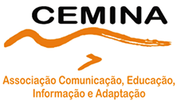
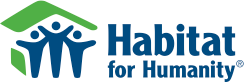
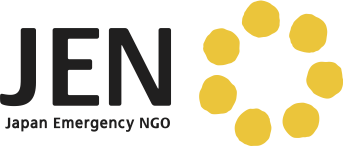

Together, we can make a differenceCharitable givingAt Wells Fargo, we understand that investing in our communities is a way for us to help create future economic growth and prosperity in the communities where we live and work. If they prosper, so do we. Working together, we provide support to education, human services, community development, the arts, the environment, and much more. In 2011, Wells Fargo contributed $213.5 million to 25,000 nonprofits, and provided $3.4 billion in community development investments. Team members donated $63.9 million and volunteered 1.5 million hours to 28,000 nonprofits and schools. And now, by working together with you, we can make a difference in our international communities. For the second year in a row, when you attend our Wells Fargo Sibos reception, you can vote on which of the four featured nonprofits that make a difference around the world will receive a donation. On your behalf, Wells Fargo will donate a total of USD $10,000 to these four charities based on your votes. CEMINACEMINA was founded by a group of women activists in Brazil who struggled to find a way to communicate with the public about aspirations, wishes, rights, and changes that women seek for themselves and for society as a whole. Through broadcast radio, CEMINA works to provide a platform for women to have a voice, air their opinions, and speak candidly about issues related to gender and human rights. Over the last decade, CEMINA has expanded to educate underserved communities of Brazil, providing access to a range of information and communication channels at low-to-no cost. Climate change has no boundaries: Help rural BrazilBahia is the fourth most populated state in Brazil and one of the poorest regions. Semi-arid, climate conditions prove challenging for nearly two million households that face periods of drought. In partnership with CEMINA, Adapta Sertão is giving young farmers in the region access to water, efficient irrigation, and innovative technologies. Such a hand up will: 
To learn more, visit cemina.org. Habitat for Humanity InternationalHabitat for Humanity International is dedicated to providing simple, decent, and affordable housing for low-income families around the world, regardless of race or religion. The world is experiencing a global housing crisis. About 1.6 billion people live in substandard housing and 100 million are homeless. In 2011, Habitat for Humanity served 81,399 families worldwide. As a result, about a quarter of a million more people are living in better housing, and are equipped to improve their lives and their livelihoods. Each year, Wells Fargo team members volunteer with Habitat for Humanity all around the world, including Dublin, Hong Kong, London, Johannesburg, Shanghai, and throughout the U.S. Providing decent, affordable housing solutions internationallyHere are a few recent milestones for Habitat for Humanity International: 
To learn more, visit habitat.org. JENJEN provides both economic and mental support to people who have been stricken with hardship due to conflicts and disasters. Every human being has a precious life of equal value and JEN aims to foster a world in which we all respect and understand each other, mutually support one another, and live with self-confidence. JEN has helped people in Africa, Eastern Europe, the Middle East, Asia-Pacific, India, and Latin America. Relief Assistance for Tohoku EarthquakeOn March 11, 2011, a magnitude 9.0 earthquake — the largest ever recorded in Japan — struck off the coast, with a resulting tsunami. Over 20,000 people were reported dead or missing and 20,000 houses were destroyed. 300,000 people lost their homes. Through one project, JEN is organizing volunteers to assist those displaced in Sendai City, Miyagi Prefecture, Tohoku Region. The project seeks to: 
To learn more, visit jen-npo.org. Save the ChildrenWhen disaster strikes around the world, Save the Children is there to provide immediate assistance and save lives with food, medical care, and education. Save the Children remains to help communities rebuild through long-term recovery programs. On an ongoing basis, Save the Children works to resolve struggles that children face every day — poverty, hunger, illiteracy, and disease. Save the Children operates in 120 countries on six continents, serving and providing support to 64 million children. East Africa Food Crisis — KenyaAfrica is the second-largest and second most-populous continent. Home to one billion people, it accounts for nearly 15% of the world’s population. In 2011, a deadly food crisis across East Africa claimed tens of thousands of lives and left millions destitute and hungry. In Kenya alone, Save the Children:
To learn more, visit savethechildren.org. |
|
|
ResourcesClick on each to learn more: CEMINA — helps farmers adapt to climate change in Brazil. Habitat for Humanity International — provides housing for low-income families around the world. JEN — provides economical and mental support to people who have been stricken with hardship. Save the Children — works to resolve struggles that children face every day — poverty, hunger, illiteracy, and disease. |
||